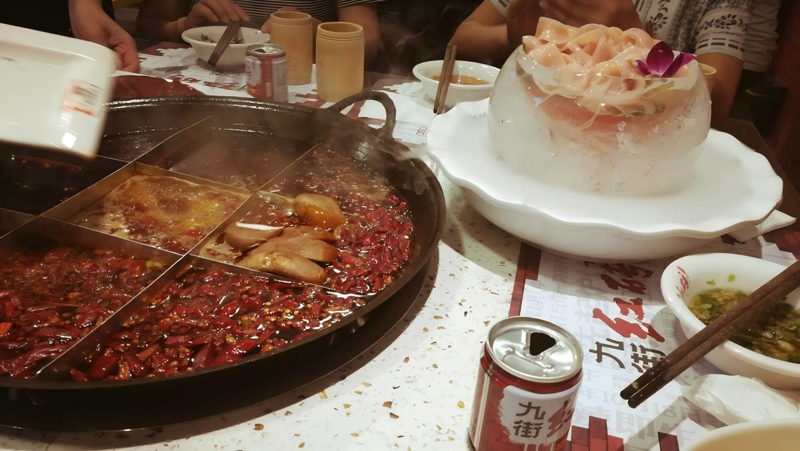

火锅

在重庆，火锅不是一道菜，是一种社交方式：一桌人、一口锅、一个晚上。
九宫格不是摆设
一口锅分成九格，不是因为好看，而是因为火力不同——中间那格沸腾最猛，适合快涮； 十字格火力中等，适合久煮；四角格温度最低，用来慢慢煨。老重庆人坐哪一格，心里都有数。
必点清单
| 食材 | 老规矩 | 口感 |
|---|---|---|
| 毛肚 | "七上八下"，十几秒就起 | 脆，一咬就断 |
| 鸭肠 | 提着烫到卷边 | 脆嫩 |
| 黄喉 | 中火多煮一会儿 | 爽脆带响 |
| 耗儿鱼 | 整条下锅，煮透 | 肉厚少刺 |
| 酥肉 | 先炸后涮，吸满油汤 | 香糯 |
| 血旺 | 四角格慢煨 | 嫩滑 |
蘸碟与收尾
标准蘸碟是香油加蒜泥，最多再补一点盐和味精——不是为了调味，是为了降温、封住麻辣。 吃到最后下一把面条，或者来一碗冰粉、一份凉糕，这顿火锅才算完整。
提示：锅底越煮越辣，怕辣的可以先从四角格开始。